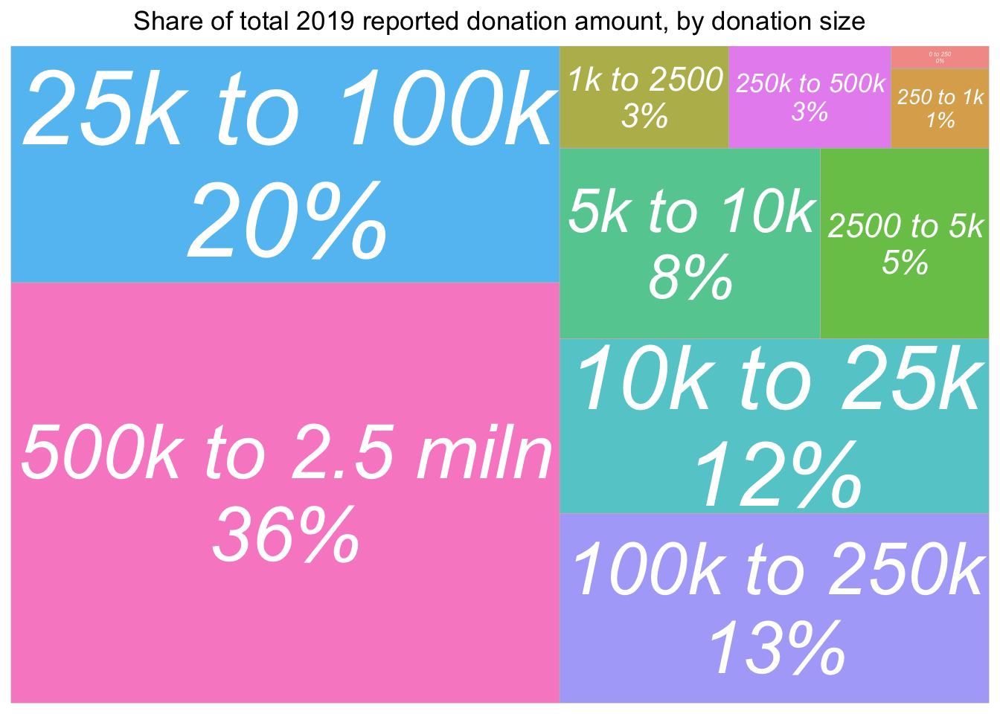

here() starts at /Users/yosemite/githubs/methodology-statistics-design
Code
# 1. Load packages, some setup definitions -- need to run it in every qmdsource(here("code", "methods_setup.R"))
Loading required package: devtools
Loading required package: usethis
Attaching package: 'usethis'
The following object is masked from 'package:sjlabelled':
tidy_labels
Installing package into '/Users/yosemite/Library/R/x86_64/4.1/library'
(as 'lib' is unspecified)
The downloaded binary packages are in
/var/folders/nh/gsssbvt5463b77hrh0_gtmnh0000gq/T//RtmpjAVLoX/downloaded_packages
Using github PAT from envvar GITHUB_PAT
Skipping install of 'bettertrace' from a github remote, the SHA1 (00b72d72) has not changed since last install.
Use `force = TRUE` to force installation
Skipping install of 'rethinkpriorities' from a github remote, the SHA1 (412755f8) has not changed since last install.
Use `force = TRUE` to force installation
Using github PAT from envvar GITHUB_PAT
Skipping install of 'rnoodling' from a github remote, the SHA1 (e5d436b4) has not changed since last install.
Use `force = TRUE` to force installation
Attaching package: 'rnoodling'
The following object is masked from 'package:rethinkpriorities':
XXX
ℹ SHA-1 hash of file is c8b456c7f6bda375da90695dc8056d74e8dfe67c
Code
# 2. Get EAS datasource(here("code", "get_eas_data.R"))
[1] "NOTE: You need to follow steps at https://stackoverflow.com/questions/62336550/source-data-r-from-private-repository for this import to work, and you need access"
Note: this has been moved from a discussion of the EA survey in the ea-data repo, and is being expanded here* NOTE: this is being moved to https://rethinkpriorities.github.io/how-to-visualize/ … more still needs to be moved
4.1 Aside: EA Forum organisation, collophon, formatting
Case: Relative shares of a total; e.g. ‘shares of EA population by referrer’, or ‘donation totals by country’
Treemaps
NOTE: The below will not run without data, but we cannot make data ‘public’ here … we can swap this for built in R or simulated data in this discussion
Code
geom_treemap_opts<-list(geom_treemap(alpha =0.7),
geom_treemap_text(fontface ="italic", colour ="white", place ="centre",
grow =TRUE, min.size =1),
theme(legend.position ="none",
plot.title =element_text(hjust =0.5)))(don_share_by_size<-eas_20%>%select(donation_2019_c, donation_2019_c_split)%>%group_by(donation_2019_c_split)%>%summarise(total_don =sum(donation_2019_c, na.rm=TRUE))%>%mutate(don_share =round(total_don/sum(total_don)*100))%>%filter(!is.na(donation_2019_c_split))%>%ggplot(aes(area =total_don, fill=donation_2019_c_split,
# Include percentage of total donation
label =paste(donation_2019_c_split, paste0(don_share, "%"), sep ="\n")))+geom_treemap_opts+ggtitle("Share of total 2019 reported donation amount, by donation size"))

A good alternative to the treemap … conveying both absolute amounts and rates in the same graph?
Case: Likert scale (individual items) and relative responses to these
The combination of stacked bar charts and overlayed error/CI bars for some ‘middle split’ seems informative:
Here, I think the use of %>% ggplotly yields only one helpful feature (but its very helpful): hovering over a dot or point on the line brings up an exact value label. I think this helps a reader understand ‘what the heck this is’.
Case: Visualizing (regression) model coefficients and confidence intervals
# Presentation, labeling and visualisations {#presentation}#```{r}library(here)# 1. Load packages, some setup definitions -- need to run it in every qmdsource(here("code", "methods_setup.R"))# 2. Get EAS datasource(here("code", "get_eas_data.R"))```::: {.alert .alert-secondary}Note: this has been moved from a discussion of the EA survey in the ea-data repo, and is being expanded here*NOTE: this is being moved to https://rethinkpriorities.github.io/how-to-visualize/... more still needs to be moved:::## Aside: EA Forum organisation, collophon, formattingMOVED to [how-to-visualize](https://rethinkpriorities.github.io/how-to-visualize/)## VisualisationsSee also Gdoc: [visualisation discussions](https://docs.google.com/document/d/1U_k_sIPDQmkKgatgXStDqrwi-g3vPGgftYbN8AEDPhs/edit#)### Ideal coding practice for visualisations {-}MOVED much content to [how-to-visualize](https://rethinkpriorities.github.io/how-to-visualize/)Will move the below over as well### Case: Relative shares of a total; e.g. 'shares of EA population by referrer', or 'donation totals by country' {-}**Treemaps**::: {.alert .alert-secondary}NOTE: The below will not run without data, but we cannot make data 'public' here ... we can swap this for built in R or simulated data in this discussion:::```{r}geom_treemap_opts <-list(geom_treemap(alpha =0.7),geom_treemap_text(fontface ="italic", colour ="white", place ="centre",grow =TRUE, min.size =1 ),theme(legend.position ="none",plot.title =element_text(hjust =0.5)) )( don_share_by_size <- eas_20 %>%select(donation_2019_c, donation_2019_c_split) %>%group_by(donation_2019_c_split) %>%summarise(total_don =sum(donation_2019_c, na.rm=TRUE)) %>%mutate(don_share =round(total_don/sum(total_don)*100)) %>%filter(!is.na(donation_2019_c_split)) %>%ggplot(aes(area = total_don, fill= donation_2019_c_split,# Include percentage of total donationlabel =paste(donation_2019_c_split, paste0(don_share, "%"), sep ="\n"))) + geom_treemap_opts +ggtitle("Share of total 2019 reported donation amount, by donation size"))```A good alternative to the treemap ... conveying both absolute amounts and rates in the same graph?### Case: Likert scale (individual items) and relative responses to these {-}The combination of stacked bar charts and overlayed error/CI bars for some 'middle split' seems informative:```{r }knitr::include_url("https://rethinkpriorities.github.io/ea_data_public/eas-engagement.html#summary-charts")```Above: from [EAS engagement post, bookdown supplement](https://rethinkpriorities.github.io/ea_data_public/eas-engagement.html#summary-charts)### Issue: Dealing with scales and large differences in magnitudes {-}If axes are cut and don't go to zero, mention this prominently in the plot.But what if we have a few values that are way above others, and 'mess up the scale'?Sometimes a logarithmic scale is helpful, but that can also lead to confusion. Otherwise...- "any CI's or other things that go outside of the limits should just be extended to the edge and not dropped)" - doable with scale_y\_continuous( oob = scales::squish) + scale_x\_continuous( oob = scales::squish)`` or `coord_cartesian` ``- or otherwise allow a clear 'break' in the axis?- Not possible to break the axis ggplot <https://stackoverflow.com/questions/7194688/using-ggplot2-can-i-insert-a-break-in-the-axis>- ... what about 'extending to the edge'?Remove outliers as a last resort; prominently mention this where doing so.### Case: Means of continuous variables: differences across groups {-}Some (imperfect) examples from donation post:- Vertical lines for 'medians and means' help put this in context### Case: Categorical outcomes by continuous outcomes (and vice/versa) {-}```{r }knitr::include_url("https://rethinkpriorities.github.io/ea_data_public/eas-engagement.html#engagement-by-age-and-tenure")```Above, from the [EAS engagement post bookdown](https://rethinkpriorities.github.io/ea_data_public/eas-engagement.html#engagement-by-age-and-tenure), we combine a `geom_point` with a `geom_smooth`.^[ DR: I'm slightly concerned about misinterpretations of the smoothed thing though ... those shaded regions maybe should not be interpreted as CI?]Here, I think the use of `%>% ggplotly` yields only one helpful feature (but its very helpful): hovering over a dot or point on the line brings up an exact value label. I think this helps a reader understand 'what the heck this is'.### Case: Visualizing (regression) model coefficients and confidence intervals {-}Forest plots as seen [in donation post here](https://rethinkpriorities.github.io/ea_data_public/eas_donations.html#predictive-models)Our `group_fp_do` function makes this easy to do.See how we group the coefficients into plots by 'theme'\In some contexts, lines for 'base rates' can be helpful ... context, scroll up from [here](https://daaronr.github.io/dualprocess/donor-voice-questions-and-tests.html#q-does-including-impact-information-affect-the-amount-raised-1)
DR: I’m slightly concerned about misinterpretations of the smoothed thing though … those shaded regions maybe should not be interpreted as CI?↩︎


 … context, scroll up from
… context, scroll up from